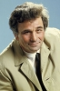

Country:United States, 123 minutes
Spoken languages:
Genres:Music, Comedy, Crime, Adventure
Director(s):Gordon Douglas
Writer(s):David R. Schwartz
Video Codec:Unknown
Number: 1962


Certification:NR
Storyline:
In prohibition-era Chicago, the corrupt sheriff and Guy Gisborne, a south-side racketeer, knock off the boss Big Jim. Everyone falls in line behind Guy except Robbo, who controls the north side. Although he's out-gunned, Robbo wants to keep his own territory. A pool-playing dude from Indiana and the director of a boys' orphanage join forces with Robbo; and, when he gives some money to the orphanage, he becomes the toast of the town as a hood like Robin Hood. Meanwhile, Guy schemes to get rid of Robbo, and Big Jim's heretofore unknown daughter Marian appears and goes from man to man trying to find an ally in her quest to run the whole show. Can Robbo hold things together?
Cast: 


Medium: Original DVD,
Comments: Part of: The Rat Pack Collection
Loaned: No
Aspect ratio: Unknown